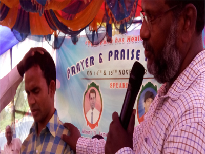

L4LM’s believes emphasizing the reliability of the Bible faith without adding or removing the word of God, and what is the transformation need for an individual’s life through faith in JESUS. The Pentecostal emphasize the teaching of the Gospel or in New Testament.
L4LM’s fundamental doctrines are developed from Proverbs. 9:1 and reveals in Acts.2:37, 38, 41, 42. And belief of L4LM is that through the Death, Burial and Resurrection of Jesus Christ, sin can be forgiven and humanity reconciled with God. And Jesus will come again to take the church with Him. 1Thessalonians. 4:16, 17.
Belife
The L4LM believes in common evangelical beliefs including the trinity, the dual nature of christ, His crucifixion for the forgiving of sins His resurrection and ascension to heaven, the inerrancy of the Bible, a literal belief in heaven and hell, and responsibility of every believer to carry out the great commission. The church holds water baptism and practices of feet washing and Holy Communion to be divine ordinances. And we not allow infant baptism.
